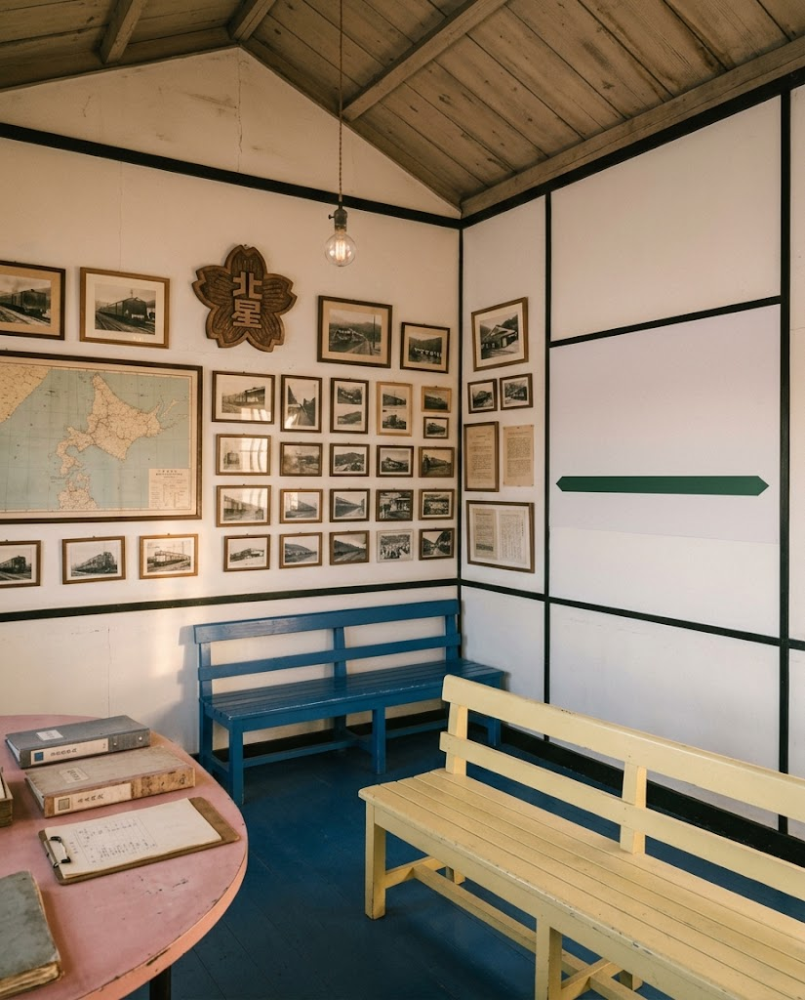
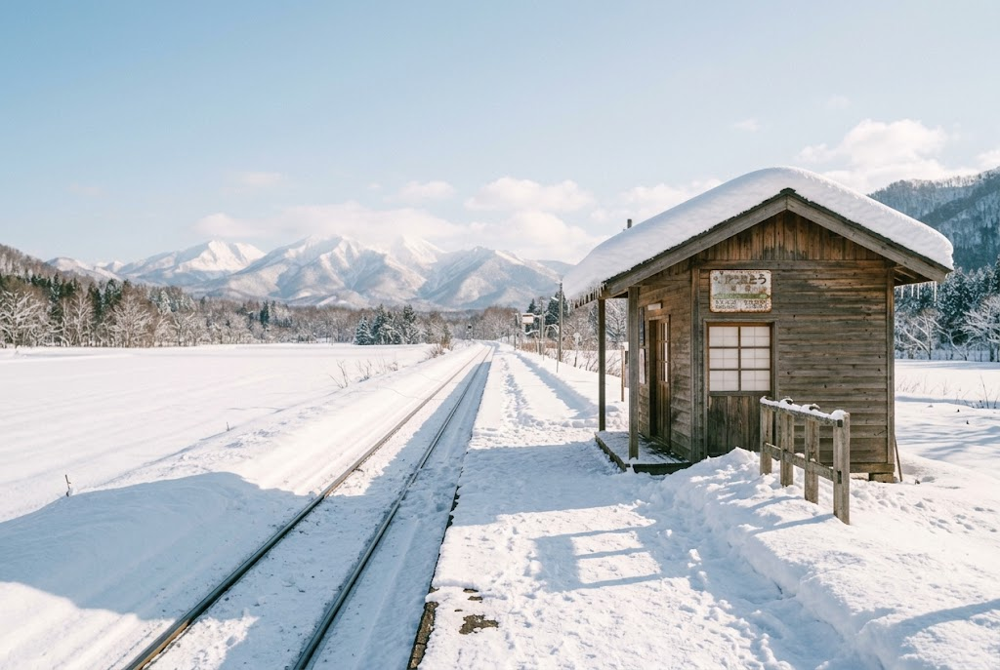

★★★★★
愛別町愛山にあるミニ資料館。かつて石北本線にあった旧愛山駅の資料が展示されています。小さな小屋ですが外壁には昭和レトロな看板が飾られ、中には当時の写真や閉校した旧愛山小学校の校章などがあり、歴史好きや鉄道ファンにはオススメの観光スポットです。寒い冬には1人一個使い捨てカイロが貰える心遣いも嬉しい。
訪れた方のクチコミ令和6年3月に廃駅となった旧愛山駅の待合室を再利用した、小さな資料館です。駅と地域の歴史を伝える写真や資料を展示しています。
愛山ミュージアム
令和6年3月15日、愛山駅は廃駅となりました。その待合室を再利用して開業したのが、愛山ミュージアムです。
地域の歴史や愛山駅にまつわる資料・写真を保存し、展示しています。地域の人々が主体となって、愛山の文化を未来へ伝えるために生まれた場所です。


廃駅となった愛山駅の待合室を再利用しています。鉄道資料を保存し、活用している貴重な施設です。
展示を見るだけでなく、鉄道ファンや愛山にゆかりのある人々が交流できる場でもあります。
外壁には昭和レトロな看板、館内には当時の写真や閉校した旧愛山小学校の校章などが並びます。
愛別町愛山にあるミニ資料館。かつて石北本線にあった旧愛山駅の資料が展示されています。小さな小屋ですが外壁には昭和レトロな看板が飾られ、中には当時の写真や閉校した旧愛山小学校の校章などがあり、歴史好きや鉄道ファンにはオススメの観光スポットです。寒い冬には1人一個使い捨てカイロが貰える心遣いも嬉しい。
訪れた方のクチコミ